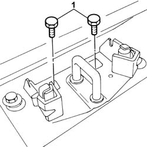
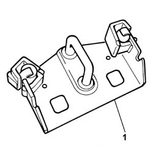

7015B18 TAILGATE LOCK STRIKER - R+R
- Path
- Procedures > 70 FITTINGS > 7015 TAILGATE/FLAP > 7015B TAILGATE LOCKING/OPENING DEVICES > 7015B18 TAILGATE LOCK STRIKER - R+R
- Kind
- repair procedure (removal / refitting; the operation number is the code)
- Applies to
- all engines; all production periods
- Interactive page
- https://sloeber94.github.io/elrnDB-fUlss/en/#/179007695
Applies to: all engines; all production periods
 Removing
Removing
 Refitting
RefittingOp. 7040B22 LUGGAGE COMPARTMENT/LOAD PLATFORM MOULDING - R+R
1. Undo the bolts fixing the lock striker.

Applies to: all engines; all production periods
1. Remove the tailgate lock striker.

Applies to: all engines; all production periods
Refitting
Removing- Position the tailgate lock striker.
Op. 7015A10 TAILGATE - ADJUST STRIKER AND ADAPT SEAL IF NECESSARY
- Tighten the bolts fixing the lock striker to the floor panel to torque.
Op. 7040B22 LUGGAGE COMPARTMENT/LOAD PLATFORM MOULDING - R+R
Topics linked from this page (2)
- 7015A10 TAILGATE - ADJUST STRIKER AND ADAPT SEAL IF NECESSARY
- 7040B22 LUGGAGE COMPARTMENT/LOAD PLATFORM MOULDING - R+R